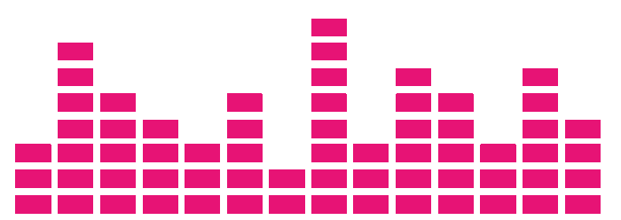
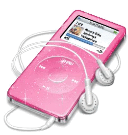
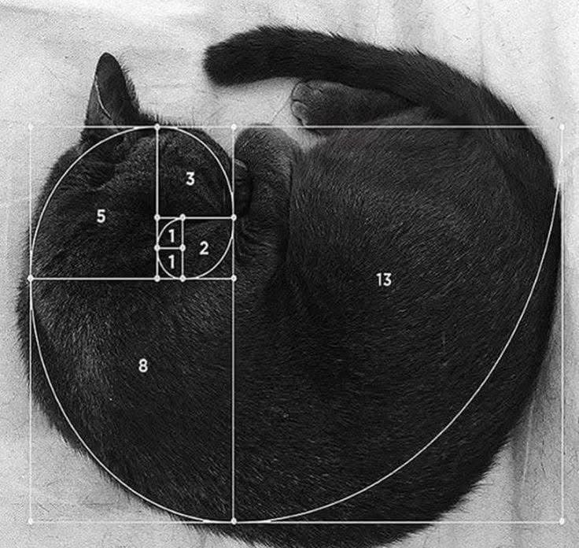
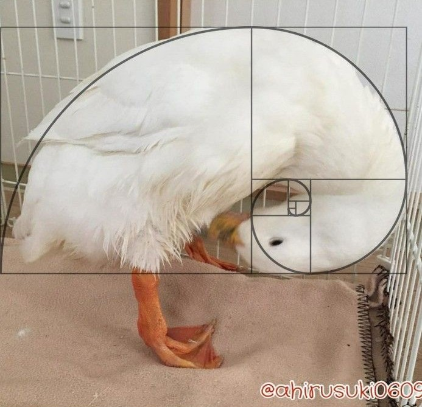
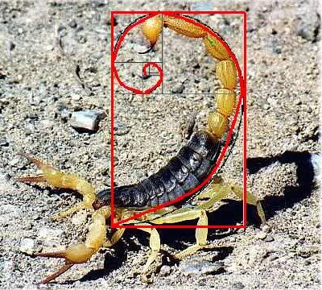
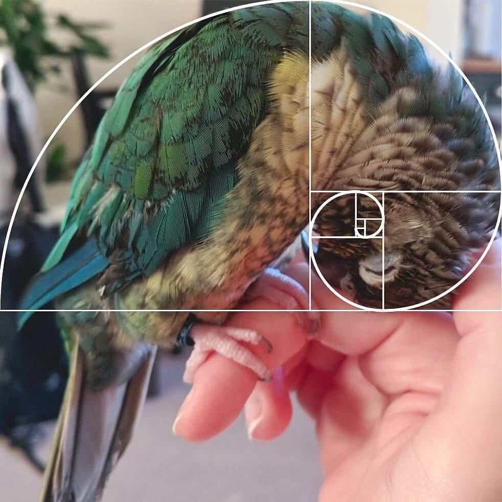

In geometry, a golden spiral is a logarithmic spiral whose growth factor is φ, the golden ratio. That is, a golden spiral gets wider (or further from its origin) by a factor of φ for every quarter turn it makes.

There are several comparable spirals that approximate, but do not exactly equal, a golden spiral.

It is sometimes erroneously stated that spiral galaxies and nautilus shells get wider in the pattern of a golden spiral, and hence are related to both φ and the Fibonacci series.

In truth, many mollusk shells including nautilus shells exhibit logarithmic spiral growth, but at a variety of angles usually distinctly different from that of the golden spiral.